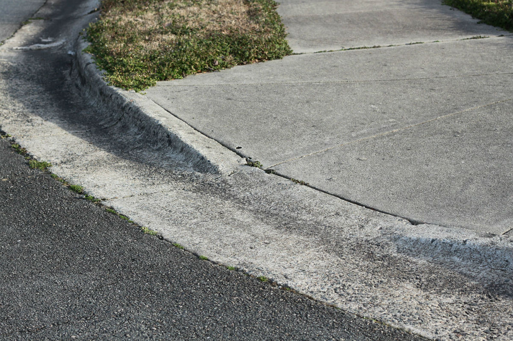
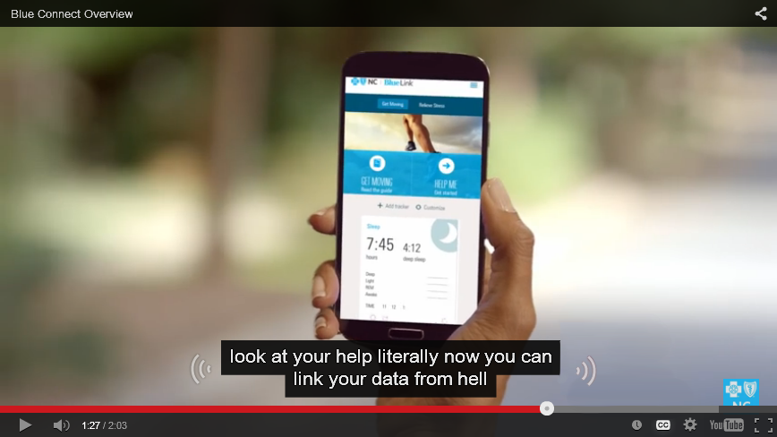

Intro to Web Accessibility
http://jtcoders.github.io/accessibility
What is accessibility?
- Accessibility is about making your sites useful to as many people as possible.
- Accessibility is about overcoming barriers.
- Accessibility is about helping your users.
“The power of the Web is in its universality. Access by everyone regardless of disability is an essential aspect”Tim Berners-Lee, W3C Director and inventor of the World Wide Web
Why make your sites accessible?
- Expand your potential audience! 54 million people in the US have a disability, 1.8 million are unable to see printed words, and 16.1 million have a cognitive or mental illness that impedes daily functioning (source opens in a new window).
- Be in compliance with legal guidelines, like Section 504/508 and WCAG 2.0.
- Avoid potential lawsuits opens in a new window.
- Do the right thing.
Accessibility is for everyone!
Photo credit: Sylvia Pellicore cc opens in a new window
Benefits of Accessibility
- Curb cuts were designed for wheelchairs, but others use them. Similarly, accessibility features end up helping everyone.
- Many times, good design practices create accessibility as a side effect.
- Accessibility features, like good alt text, can improve your search engine placement.
What are barriers to access?

Photo credit: sciencesque opens in a new window cc opens in a new window
Types of Accessibility Barriers
- Visual: blind or low-sight, color blind
- Hearing: deaf or hard-of-hearing
- Physical: MS, paraplegic/quadriplegic, epilepsy
- Cognitive: dyslexia, low literacy, learning disabilities
More on The Diversity of Web Users
How People with Disabilities Use the Web - Diversity of Web UsersFrom the W3C's Web Accessibility Initiative
Accessibility is a continuum, not a checkbox

Photo credit: Matt Carman opens in a new window cc opens in a new window
Visual
Note: You can automatically enable closed captioning by adding ?cc_load_policy=1 to the url of an embedded YouTube video
What assitive technology do people use?
- Browser zoom
- Screen magnification
- High contrast displays
- Screen readers
Try It: Screen Readers
- Install the Chrome Vox extension.
- Follow the tutorial
- Try navigating other websites.
- Try the same process on your phone. (Look in Settings > Accessibility.)
Provide an alternate path

Photo credit: Linh H. Nguyen opens in a new window cc opens in a new window
Alt text
- Alternate text describes pictorial content in words.
- Pay attention to context.
- Describe the function, not the content.
- If an image is purely decorative, use
alt=""to instruct a screen reader to skip it. - Instead of using "longdesc," provide a caption or link. Consider HTML5
figureandfigcaption.
<img src="location.jpg" alt="brief description">
<figure>
<img src="location.jpg">
<figcaption>brief description</figcaption>
</figure>
Other tips for screen readers
- Headings skip-nav links and landmark roles give users a way to navigate through a page.
- Content is more than just visual.
- External link indicators prevent unexpected page changes.
- Tables can be hard to navigate, so only use them for tabular data.
- Many users are switching to touch-screen based readers like VoiceOver on iOS opens in a new window.
Try It: Vision Simulator
- Read about and install the No Coffee Vision Simulator extension
- Go to a website you like, and try different simulators
Provide contrast

Photo credit: antifluor opens in a new window cc opens in a new window
Try It: Accessiblity Tools
- Install the Accessibility Developer Tools extension
- Go to a website, and inspect a section of text.
- In the style inspector window, click Accessibility Properties
- See the contrast ratio of the text. If it's too low, try clicking an alternative.
More on Visual Accessibility
- If you use color to indicate something, also use another indicator. For example, underline links on hover or mark a required field with an asterisk.
- Red/green color blindness is the most common, so avoid green on red.
- Include color names in product descriptions and show examples (article opens in a new window)
- Have a minimum of contrast ratio of 4.5:1 for normal text and 3:1 for large text. (Checker opens in a new window)
- Try zooming in on your designs, to see how they look when enlarged. It is a good idea to use ems and percentages instead of pixels when you can.
Hearing
Provide Good Captions
(No, automatic captions don't count)
Credit: Sylvia Pellicore, from YouTube
The original audio in that clip was "link your data from health care apps"
Notes on Hearing Accessibility
- Most deaf or hard-of-hearing people have limited difficulty with web accessibility.
- Provide captions or transcripts for multimedia elements.
- Don't rely on sounds to convey information, like an "alert" noise. Even hearing users often have their computers muted.
- Be especially careful if your site targets older users, as hearing loss is common.
Physical
Demo
Notes on Physical Accessibility
- Many users with limited mobility interact with the screen via keyboard.
- Other users use a mouse, but have trouble with fine motor control.
- Make clickable elements large, and put space between them.
- Avoid clickable page elements that move.
- Animations with rapid flickers are not only annoying, they can trigger epileptic seizures.
- These guidelines also help children and touchscreen users!
Physical
Don't overwhelm

Photo credit: Thomas Hawk opens in a new window cc opens in a new window
Provide plenty of time

Photo credit: Bethan opens in a new window cc opens in a new window
CAPTCHAs don't just catch robots

Notes on Cognitive Accessibility
- This is a less-researched area of web accessibility. Here is a Cognitive 101.
- Minimize cognitive load--don't overwhelm the user.
- Use common icons to mark important tasks and consider text labels.
- If you have timed content (forms, image galleries, etc.) provide controls or allow users to extend time.
- CAPTCHAs aren't blind-friendly, are very difficult for users with learning disabilities like dyslexia, and annoy everyone. Consider an alternative method opens in a new window.
Let's try it
Visit a site you use frequently. Identify one accessibility feature that is part of the site and one feature you would change.
Show your users some love!

Photo credit: Sam Felder opens in a new window cc opens in a new window
Resources
- Web Accessibility for Designers opens in a new window
- WebAIM (Web Accessibility in Mind) opens in a new window
- Global Accessibility Awareness Day opens in a new window
- Accessibility Wins opens in a new window
- Web Experience Toolkit opens in a new window
- W3C Web Accessibility Initiative (WAI) opens in a new window